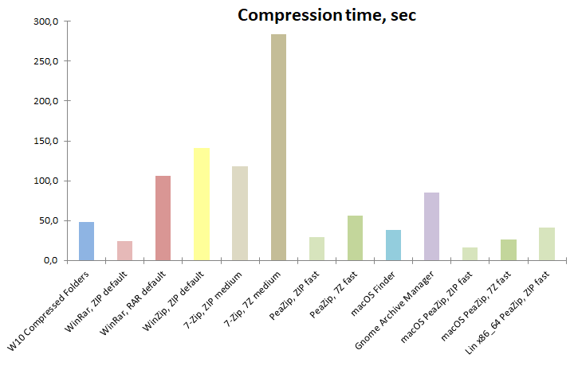
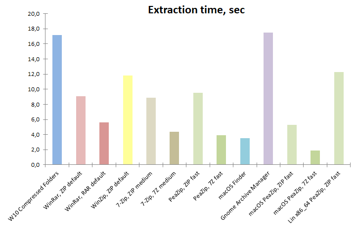

|
Goals
Test
performances of default,
out-of-the-box compression settings.
Compare mainstream archive manager apps
(7-Zip, PeaZip, WinRar, WinZip, Windows Compressed
Folders), over multiple archive
formats
(7z, rar, zip), for
compression ratio, and
compression and extraction speed to find optimal
compression performances tradeoff.
The comparison is meant to simulate the case
of user
with very basic needs and little knowledge
about compression.
|
Software
settings
Benchmarks
are run on Windows 10 64 bit, using 64 bit versions of:
- 7-Zip 25.00
- PeaZip 10.6.0
- WinRar 7.11
- WinZip 76.9
- Windows 10 built-in Compressed Folders
|
Hardware
settings
Notebook with Intel Core i7-8565U CPU, 4
physical cores with hyper-threading (8 logical cores), 8 GB RAM.
System disk 512 GB
PCIe NVMe SSD with NTFS filesystem.
With 7-Zip benchmark score of 23500, this machine represents an entry
level specs
system for today's standards. |
|
|
|
Archive
formats compared in this benchmark
- 7Z file
format
popular Open Source archive format
introduced by 7-Zip, providing comparable to higher compression ratio
than RAR, supported by many archive managers
- RAR file
format
(RarLabs RAR5 revision) proprietary archive format providing
better
compression that ZIP plus advanced features like error recovery;
due its proprietary nature it can be written only by WinRar, and it is
supported by third parts archivers only for extraction
- ZIP file
format
widely used archive format, read / write supported by most archive
manager
utilities. De-facto standard for data archival and distribution on
Windows platform, and supported by file managers and system tools on
most non-Windows systems.
|
Input data
Benchmark input contains 43 files in 4 directories for total 1.22 GB
(1,318,000,857 bytes), composed by well known reference files
representative of different data structures, widely used for
compression
benchmarks:
|
|
|
Benchmark methods
Benchmark
input data is saved in system disk (PCIe SSD) and compressed to system
disk, same partition, separate directory; the resulting archives are
then extracted to
separate directory on same (system) disk/partition.
Each compression and extraction test is repeated 5 times to get an
average value; size is expressed in MB (lower, better), time in seconds
(lower, better).
Apps are tested at default
out-of-the-box compression settings for ZIP
(chosen as most commonly supported format) and a secondary, well knwon
and widely supported format (7Z and RAR).
Please note that PeaZip uses same Open Source routines implemented in
7-Zip for 7Z and ZIP formats (tested in this benchmark), so speed and
compression ratio of the two apps are similar with same compression
settings, while values reported in this benchmark differs due the
different choices for default compression settings in the two apps -
PeaZip defaults more oriented to speed, and 7-Zip defaults more
oriented to high compression.
Benchmark results
table, the lower the better for all columns
|
Compressed
size (MB)
|
Compression
ratio
|
Compression
time (sec)
|
Extraction
time (sec) |
W10
Compressed Folders
|
415,00
|
33,02%
|
48,0
|
17,2
|
WinRar,
ZIP default
|
407,00 |
32,38%
|
24,0
|
9,1
|
WinRar,
RAR default
|
318,00 |
25,30%
|
106,0
|
5,6
|
WinZip,
ZIP default
|
393,00 |
31,26%
|
141,5
|
11,8
|
7-Zip, ZIP
medium
|
396,00 |
31,50%
|
118,1
|
8,9
|
7-Zip, 7Z
medium
|
286,00 |
22,75%
|
284,0
|
4,4
|
PeaZip,
ZIP fast
|
426,00 |
33,89%
|
28,8
|
9,5
|
PeaZip, 7Z
fast
|
346,00 |
27,53%
|
56,4
|
3,9
|
Archive size in MB (lower
better), compression ratio of input data, and time in seconds (lower
better) to complete compression and de-compression of data.
Compression ratio
results:
what application compresses better by default
In terms of attainable compression, 7Z and RAR formats shows a clear
advantage ove ZIP format, which never reaches a compression ratio lower
than 30%, some percentage points worse than non-zip formats.
7Z provides best compression
result with medium compression level (default on 7-Zip), and third best result with fast
compression level (default on PeaZip), with RAR at medium
compression level (default on WinRar) providing the second best compression ratio, with
an intermediate output size.
As for ZIP compression, WinZip provides the best result, even if it is
significantly worse (larger output) even of 7Z at fast compression
level,.

Compression speed
results:
what is the fastest application by default
WinRar
(fastest) and PeaZip (second fastest) provides the best
results in terms of compression speed when using ZIP format.
Fastest non-zip compressor is PeaZip using 7Z fast, with RAR being
almost twice as slow, and 7Z medium being almost 6 times slower.
WinZip notably provides the slowest ZIP compression performance, even
solwer than RAR compression.

Extraction speed
results:
what is the fastest application by default
Decompression
of ZIP archives is slower than decompression of RAR and 7Z archives, in
contrast with typical compression speed test results.
This design choice for newer archive formats makes sense, as for
general rule of thumb it is assumed it is more probable / frequent the
need to extract a compressed content rather than to create a compressed
archive - in example a package, which was compressed a single time, may
be accesssed multiple times to restore saved content, or distributed to
many users each one needing to extract the compressed content.
Fastest decompression time is provided by PeaZip (7Z fast), second fastest by 7-Zip (7Z medium),
third fastest by
WinRar (RAR).
As for ZIP format extraction, 7-Zip, PeaZip, and WinRar performances
are very close, while WinZip and Windows 10 Compressed Folders are
significantly slower.

Overall best
compressor out-of-the-box
It is not easy,
if even possible, to define what is the best performing
application in this benchmark, as all tested apps supports multiple
archive formats fulfilling different needs for different user cases at
best.
Let see results in detail:
Fastest compressor
WinRar (ZIP default) provides the fastest compression, quite closely
matched by PeaZip (ZIP fast) which however, with this setting, produces
a larger archive.
PeaZip (7Z fast) provides an interesting option when speed is a
prominent requiremet, being the fastest non-zip compressor of this
benchmark, and producing a significantly smaller archive than any other
ZIP compressor, with the additional benefit of being the fastest format
in the extraction benchmark.
Read more about fast compressors in fastest
copression benchmark.
Best compression ratio
7-Zip (7Z medium) provides the best compression ratio, 22,75% against
25,30% of WinRar (RAR default) but being 2.7x times slower.
PeaZip (7Z fast) provides a reasonable performances tradeoff reaching
27,53% compression ratio (significantly better than any ZIP compressor)
but being almost 2x faster than RAR default compression.
Read more about best compressors in terms of maximum attained
compression ratio in maximum
copression benchmark.
Final
recommendations
ZIP
remains the format of choice if fast
compression and compatibility are
the main
concerns, with WinRar and PeaZip providing faster ZIP compression
even
if at the cost of losing some compression ratio compared to other
utilities
RAR and 7Z formats
provides far better
compression ratio than ZIP increasing only compression time, not
decompression, making it a viable high performance alternative in every
user case where archive extraction occurs more often than archive
creation - i.e. for content
distribution.
In 7Z
subgroup, 7-Zip and
PeaZip performs very similarily (PeaZip using same Open Source
libraries provided by 7-Zip), but different defaults makes 7-Zip more
oriented to strong compression out of the box, while PeaZip default 7Z
compression setting is gerared toward speed - a choice which is
influenced by today's incidence of large files (as multimedia formats)
containing poorly of non-compressible
data.
RAR format is proprietary and is supported for archive creation only by
WinRar - even if some archivers as PeaZip can create RAR archives this requires
WinRar being installed to use its binaries.
Verdict
For users needing maximum
compatibility with recipients using different archive managers,
the best choice is ZIP format, in which WinRar and PeaZip provides
best compression speeds, with WinRar providing better ZIP compression.
For maximum compression ratio,
7-Zip (7Z medium) - or PeaZip set with same compression settings -
provides an better compression ratio than RAR, and (by wide margin)
over ZIP format.
PeaZip (7Z fast) provides a well
balanced alternative, with fastest non-zip compression speed,
fastest extraction speed, and third best compression ratio which
exceeds CR attainable with any ZIP compressor - even spending more time
and computing power as with WinZip.
Synopsis: Out-of-the-box
compression
benchmark. What is the overall best application between 7-Zip,
PeaZip, WinRar, WinZip for general purpose archiving and
compression in different formats. What is the application providing
best compression out-of-the-box. What is the fastest application. What
software
extracts / decompress faster by default. Conclusion about file
archivers
performances comparative.
Topics: PeaZip vs 7-Zip vs
WinRar vs WinZip compression benchmark, which is the best file archiver
application
PeaZip > Compression
benchmark > 7-Zip, PeaZip, WinRar, WinZip comparison
|
|